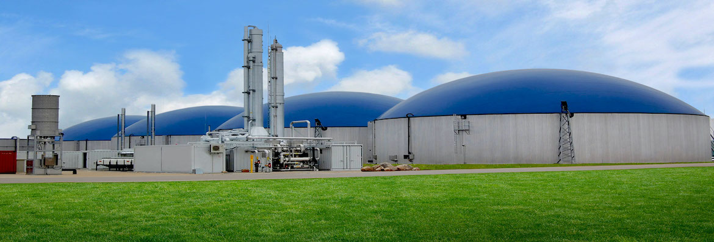

biogas workshop
After workshop slides

Waste treatment plants, dairies and other industries across California are
generating biogas at an increasing rate, exceeding their need for heating
digester feed materials.
This workshop shares experiences for using this resource.
University of California, Merced
California Room
Merced, California
Tuesday, November 12, 2019
8:00 AM – 4:30 PM PST
Biogas has great potential for addressing
greenhouse gas pollution and serving
growing energy needs. Waste treatment plants, dairies and other
industries
across California are generating biogas at an increasing rate, exceeding
their
need for heating digester feed materials.
What are the best options for using the biogas? And what remaining
questions need more exploration?
This one-day workshop at the University of California, Merced will bring
together
experts, who have years of experience with biogas, and newcomers, who have
recently installed new equipment or are thinking of upgrading their
equipment.
The goal is to share experiences and insights and identify what
questions
remain
unanswered.
UC Merced is a pioneer in sustainability research, from the Sierra Nevada to
the San Joaquin Valley, to developing novel energy systems or new materials
for collecting solar energy. CITRIS supports research in sustainability,
low-impact living and sustainable infrastructures.
We are founding members of the UCTV channel that shares research and
innovations for improving our relationship with our planet with the general
public.